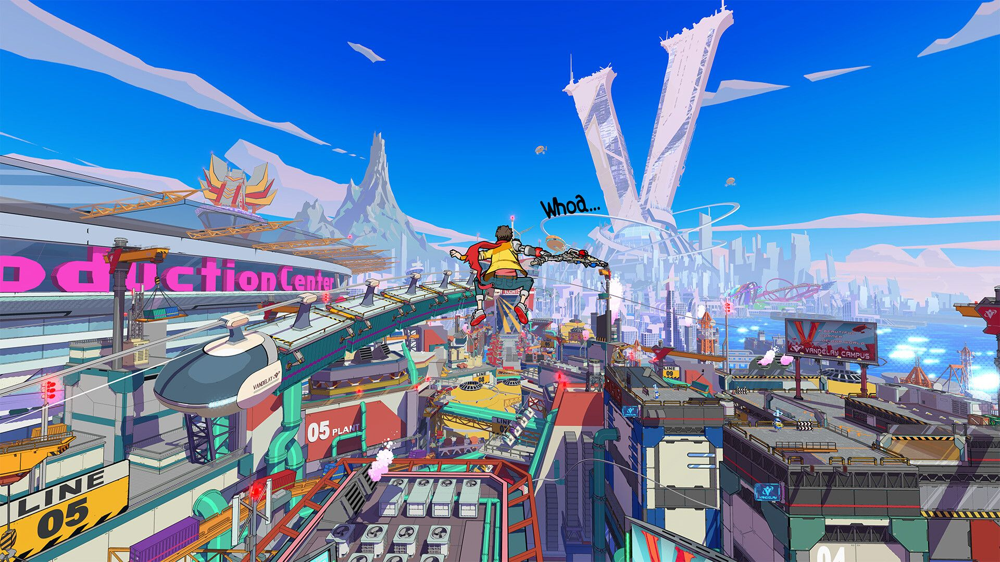

Hi-FI Rush

Hi-Fi rush is a rhythm based combo building beat-em-up that absolutely OOZES with style. As is typical of games that do things that are cool unique and potentially financially risky, the game was shadow dropped with zero marketing and received very little attention, which is a DAMN shame because it's honestly super awesome. The basic premise is that the main character gets an iPod embedded in his chest, and as a result everything around him synchronises with the rhythm of whatever track is playing. The graphics are a cel-shaded Sunset Overdrive reminiscent style, the character designs are wonderful and varied, and the main character is wannabe rockstar hitting people with a guitar made of scrap metal. The combos become more and more complex as you progress through the game, parrying becomes a key mechanic partway through the game, the platforming gets more and more difficult and there's a fairly frantic ziplining mechanic. You can call in a progressively increasing number of allies to do ally attacks that vary in function and act as ways to open up new sections of old levels new allies were not initially present for, adding a layer of replayability to those levels, and something for completionsists to latch onto. The characters are fun and I enjoyed how they were written, everyone has bombastic personalities and the enemies read like real people in a corporate structure, the message is pretty apparently anti large soulless corporation, and the gameplay feels so satisfying when you can pull it off correctly.